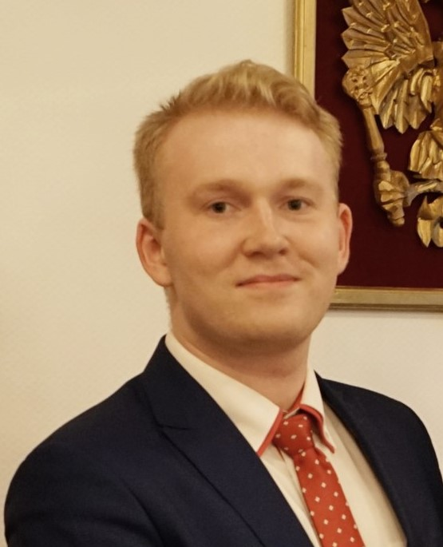

George Ivanov

Telegram: george2107 (preferable)
Mail: ivanovga2107@gmail.com
LinkedIn:
linkedin.com/in/georgii-ivanov
Work Experience
T-Bank (formerly Tinkoff)
Product Manager. August 2024 - Present
-
Increased the quantity of sales in telesales by 68% with introduction of ML
scoring algorithm
-
Build a process of continious launches of marketing campaigns and
hypothesis testing in it
Product Analyst. August 2022 - August 2024
-
Led the whole cycle of working with hypotheses from prioritization to
validation through AB. The resulted features save millions of rubles in
costs
-
Introduced IP-telephony in support chats, which resulted in 12pp
increase in the overall IP telephony share. The result is a 7 mln rubles
(~72k USD) decrease in monthly costs
-
Proposed a pivot for a personal managers team, from pure support to
incorporating the elements of cross-sell and client relationships. The
work is in progress, the estimated effect is 3 mln rubles (~33.7k USD)
of an increase in revenue
-
Conduct the research on the support applications on insurance products,
highlighted growth points for the team. Reduced the contact rate from
4.8% to 3.5%
-
Built metric trees for the marketing in chats and chat screen navigation
Rosbank (formerly Société Generale). Capital markets and investment
banking
Data Analyst. August 2020 - August 2022
-
Built a dashboard on the bank’s market share in the FX market, automated
it using Python
-
Built a tool for gathering market data for the market analyst team after
the withdrawal of Bloomberg from Russia. The tool saves the analysts
approximately 50 minutes every day
- Explored growth points for the sales team
-
Set yearly goals for the sales team in coordination with the management
Other Activities
Samolet Plus Franchisee
October 2023 - April 2024
Launched a real estate agency under the franchise:
- Rented an office
- Renovated the office
- Hired the team of 4 sales
-
The team executed the first renting deal and built up a base of
apartments for sale in the secondary market
Due to the lack of funds and unfavorable market conditions decided to sell
the office to another franchisee
Education
Moscow State Institute for International Relations. MSc Economics.
2019-2021
Moscow State Institute for International Relations. BA International
Relations. 2015-2019
Additional Information
Skills: Python (pandas, matplotlib, plotly, sklearn), SQL, Tableau, Superset, Excel, Amplitude
Courses: Simulator for Learning Data-Driven Product Management (GoPractice), Python for Data Science and Machine Learning Bootcamp (Udemy), Python for Everybody (Coursera), Data Visualization (Kaggle), Intro into Data Science and Machine Learning (Stepik), Statistic Basics (Stepik)
Languages: Russian, English, Vietnamese, French